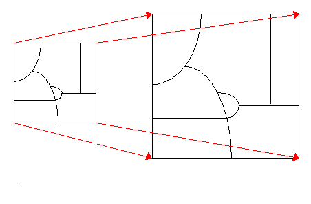

Transform
This geoprocess applies a spatial transformation to all features of a layer.
The supported transformation methods are:
Required input consists of a set of source and target control point coordinates.
Source and target points are introduced into the table of error vectors by dragging a vector interactively from source to target in the current View.
Each transformation method requires a specific minimum number of control points. If more than the minimum number of points are available, then the quality of the transformation can usually by improved by a root mean square adjustment.
To allow assessment of transformation quality, A root mean square error will be provided for each control point, as well as for the whole set.